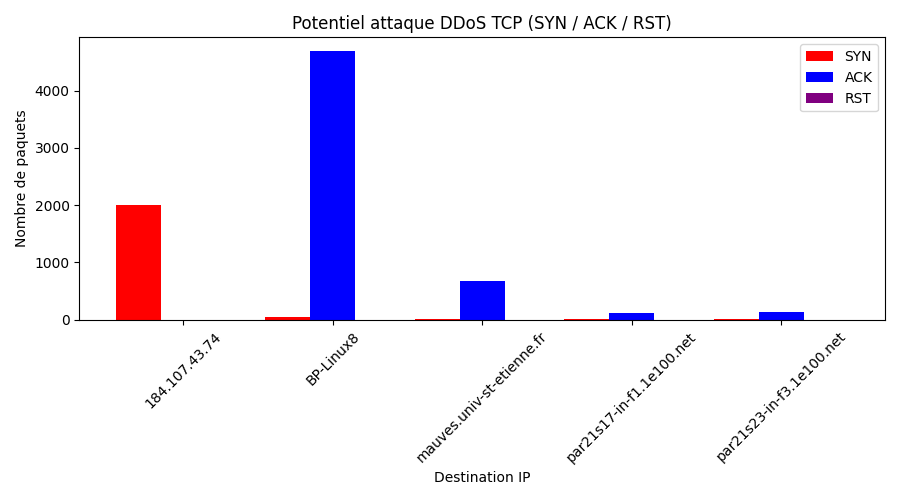
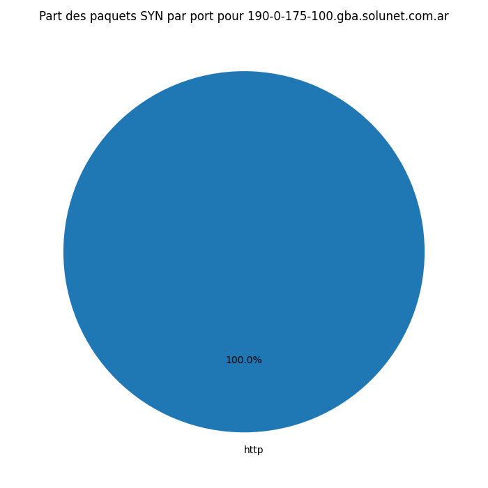
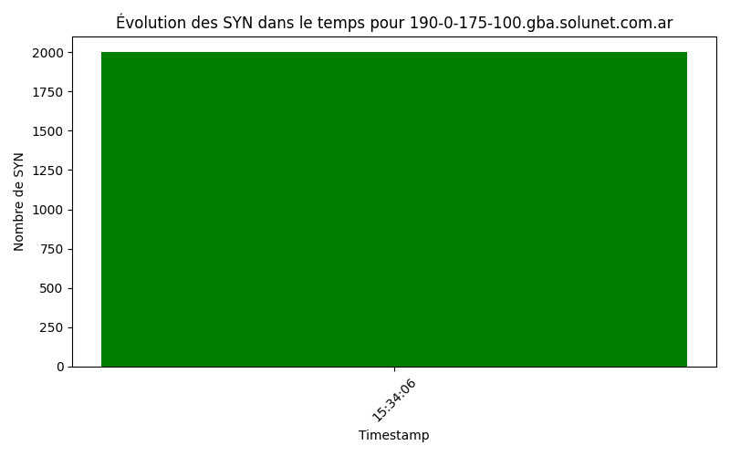
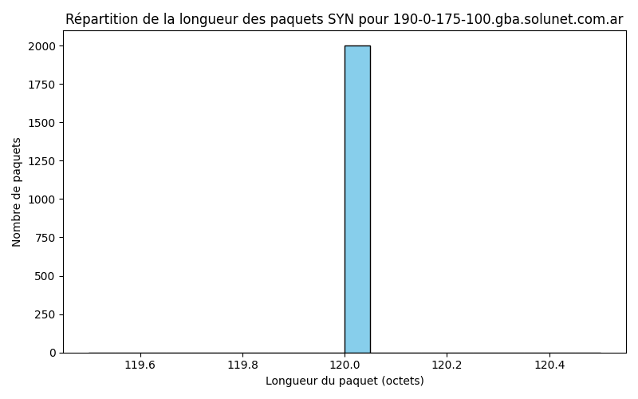
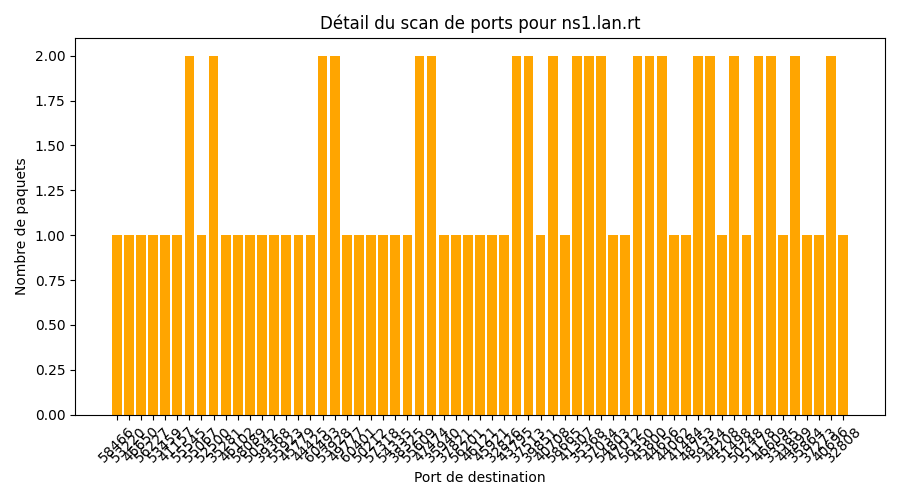

Analyse Tcpdump
Répartition des Protocoles

Distribution des longueurs de paquets

Top 10 Ports Sources

Flags SYN vs autres

Potentiel attaque DDoS TCP (SYN / ACK / RST)
Flags SYN par Source IP

Répartition des paquets SYN par port (source la plus active)
Évolution des Flags SYN dans le temps
Répartition des longueurs de paquets (source la plus active)
Détail du scan de ports (source la plus active)
Potentiel SQL Injection

Potentiel Brute-force